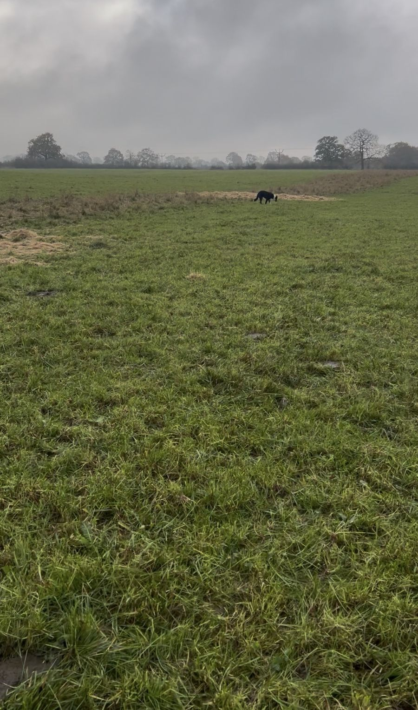
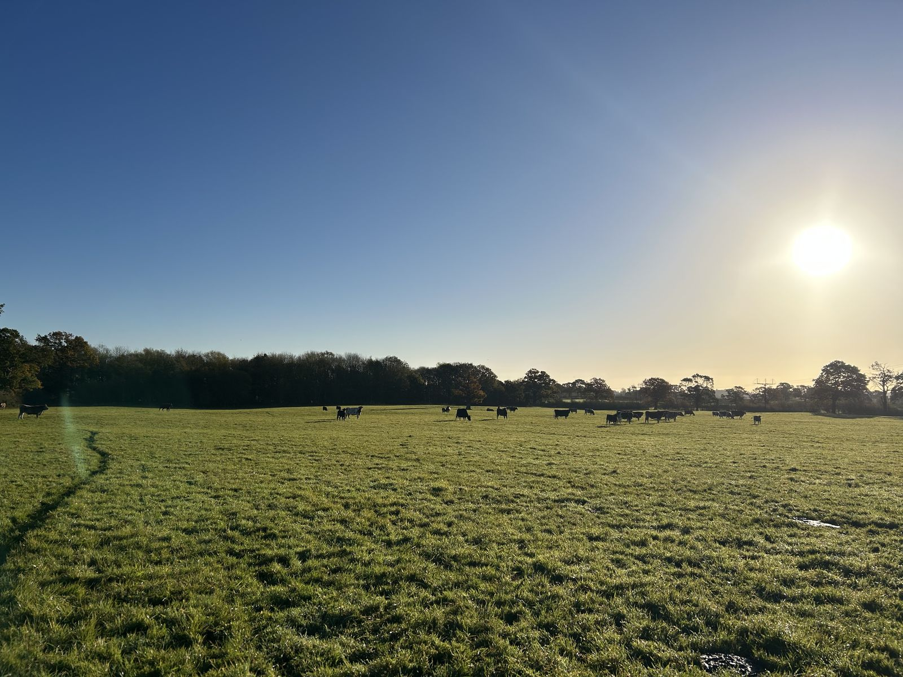
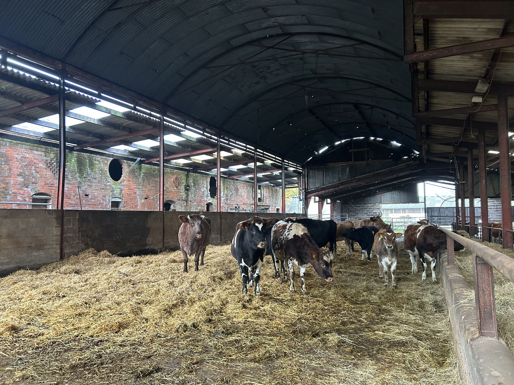
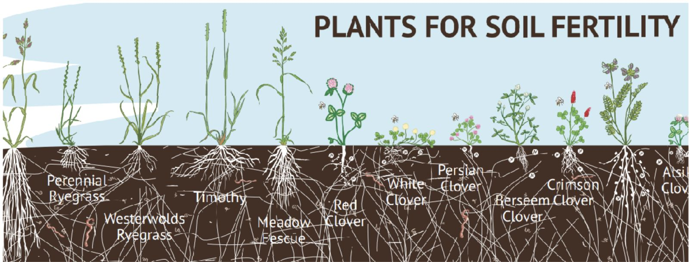

Considering outwintering: looking at my context before making any decisions
It's the 19th of November. I'm in one of the fields that the cows have just been in, and they've now come inside for the foreseeable. One question I keep coming back to is: should the herd be out all winter, or inside?
Just to give you a picture, the cows are in the sheds on straw, eating hay that we harvested this summer. Here in the field, you can see that we have been feeding hay out to them on the grass, just to start getting their rumen ready for the change in diet. We also found that the flush of grass growth since the summer, with the weather we have had, has been very lush, and in some of the fields it's actually been a bit too rich for the cows and they've got a bit dirty. So again, feeding them hay will hopefully balance their guts, make them feel more comfortable and make sure they're absorbing as many nutrients from their food as possible.

But over the field, they've grazed it really evenly, they've done some good trampling, and they've got quite an even dispersion of dung everywhere, which is great. What I really notice, especially when the herd are in the field, is the number of birds, especially starlings, that come to feed and follow the herd around the field. That's a really special interaction between the herd and the wildlife, and I know it's affected by the decision to bring the cows in.

I'm going to use this blog to talk about my decision-making process, the things I need to consider, the further thinking that needs to be done, and reflections on the last 10 years as well, because I have tried things before and, for whatever reason, not tried them again.
So let's start with the hidden costs of bringing the cows in for winter. On the surface it could look quite simple: you've got all your cows in a barn, nice and safe, out of the elements, on a lovely bed of straw, eating all the hay they could possibly want. They aren't cowering from the rain or the wind, or being challenged in that way. But what's behind that?

Obviously we spent the summer making the hay, and that had its own decision-making process: deciding when to cut, and making sure the fields were free from nesting birds, and that the migrating butterflies and insects that use the flowers of the grasses, the legumes and the other plants amongst them still have food. That needs to be decided, and it's weather dependent as well. We managed to cut quite late, in mid-July, after lots of surveying of the fields to make sure we didn't have any evidence of nesting birds, and we left strips of uncut hay as a refuge for the wildlife: small mammals, birds and insects.
To make hay across our fields, we're talking about 20-acre fields. That's a tractor to go out and cut, a tractor to go out and turn a couple of times, a tractor to row up, a tractor to bale, and a tractor to bring the forage in and put it safely in the shed so it's kept dry. So there's a lot of diesel and machinery, and obviously time and energy, that goes into that.
At the moment we don't grow oats, wheat or barley, so the straw we buy in comes from an external source. That has its own process to be produced, and then it has to be carted here and stored. It's a big cost, and it's also an external input that, if we didn't need it, would make our system more resilient.
Then we've got the practicalities of managing the winter sheds: bedding down and mucking out, making sure they've got food, and other things like making sure the cows aren't getting unhealthy or being challenged by worms, parasites, mites and all those sorts of things. I haven't yet had enough money to invest in a cow brush, which I know they would very much appreciate, especially because they've been out this extra month. Their coats have definitely got fluffier than they would have if we'd brought them in in October. If we have a mild, wet winter, that thick coat can irritate them, they can rub, and it can cause problems. So I just have to be aware of that and act to make sure it doesn't cause them any problems.
So why don't I simply decide to outwinter? Well, from learning from my peers and all the work I've done with holistic management, I've found that to outwinter successfully needs planning, and that planning has to happen the season before, not be decided in November. By successful I mean keeping the herd happy and stress-free outside, able to shelter from the elements, and making sure the grazing and the outwintering only enhance the soil health, rather than ruining it or setting us back.
There have been a lot of things that affected my ability to plan for outwintering this year. As you know, the farmland has been up for sale, and I have spent the year not knowing what would be left, if any, or how many cows it could carry, and I've had to make a lot of decisions based on huge uncertainty. My instinct was to conserve as much hay as possible, as that would be food for the cows I was able to keep. If I wasn't able to keep as many cows as I'd hoped, then it's something I can sell. So that was the decision. I made more hay than maybe I needed, but it's organic hay and it is at a premium. It also means I hopefully don't need to buy in hay this year.
That was one factor. It also meant I was grazing the remainder of the fields that I knew were going to be secure for me, in quite fast succession. In the high growing season, paddocks were being returned to every 30 to 40 days, whereas normally I would have liked it to be more like 60 to 90 days.
For outwintering, you need to make a decision to leave standing grass in the summer, so it's there for the winter. Basically you're leaving fields to grow a dense sward, and that will be feed for the cows in the winter, supplemented with hay. But it will also be food for the soil, because they will trample that long, dense grass down, and that will protect the soil and feed the soil microbes for years to come. So that decision needs to be made. What's going to be shut up in the summer for winter? How much can be closed off? What are those fields like in terms of their ability to drain if it is wet, and how accessible are they if we do need to get the cows in because the weather is just appalling, or they've moved through a field quicker than we had planned for?
People are also having great success with not carting the hay into the shed at all, but leaving it in the field from the summer, or moving it from the fields where they've made the hay into the fields where they're going to be outwintering. That can all be done in the summer, so there's less moving of hay and it takes up less building space. You're also not bringing hay out in the winter to supplement feed on wet ground that can be easily compacted.
Without that planning, all the limitations are really confronting. As I've said, our ground is heavy glacial clay, and wet clay under hooves or a tractor poaches and compacts, which damages the soil structure. That means it can hold less air and less water, and it takes an even longer time to recover. My apprehension is that by just doing it and getting it wrong, I'll undo the last decade of soil building in one winter, which we obviously don't want, because we need the farm to be as resilient as possible. Healthy soil not only helps you cope with wet conditions in the winter, it also helps with the dry conditions we're seeing so much more of in the summer.
But I do know several farmers who outwinter successfully on heavy clay, so I know it is possible. The soil type isn't a reason to say, “No, I can't do it.” But it does mean I have to draw on all the tools I've been learning through holistic management and put a proper plan in place. I can only do that by understanding the land and the plan, making careful observations, and reflecting on them to inform a better plan in the future.
As you know, I'm on my journey with the Roots to Regeneration programme, 10 years after I did a different holistic management course. Back then we had a context, but now it's me designing my own context, with Adam and the family. The context is basically why you're farming: what you see as the future for the land, the business and the people around you. Every decision you make on the farm has to be tested against it.
I haven't formalised mine yet, but it is taking shape. I'm considering my context along the lines of:
- building healthy soil, which means more life in the soil, more organic matter and a better structure
- increasing its water-holding capacity, so the land copes with both wet winters and dry summers
- the ability of the ground and the soil to grow diverse swards
- producing nutritious food for our local community and our family.
Diverse swards mean lots of different types of grasses, legumes and herbs, and they all have different rooting depths. That means they can not only penetrate different depths in the soil, they can access different minerals in the soil and bring them up to the surface, feeding the soil surface and also the animals that are grazing it or using it for food. Drawing up a wide range of minerals means the forage that grows is more nutritious, and in turn that nutrition is translated into the food we produce, be that milk or beef, for us and our community.
If you'd like to find out more about the different grasses, legumes and herbs that can make up a diverse sward, Cotswold Seeds have a really useful species guide.

So every decision can affect each part of that process. I like to see it this way: we look after the soil, which looks after the pasture, which looks after the farm animals and the wild animals, and then it puts nutrition on the plate, which keeps people healthy. So the outwintering question becomes: does it move us along that process, or does it move us away from it? I believe that, done well, it feeds the soil, benefits the wildlife, and allows for huge savings on time and energy like labour and fuel and a lot of the other management that comes with putting the cows inside. By feeding the soil, it also provides food for birds and other animals that are trying to survive over winter. But done badly, or making the wrong decision on the wrong field at the wrong time, it damages everything we're trying to build.
Really interestingly, Caroline Grindrod, who leads Roots of Nature and the Roots to Regeneration course with Clare Hill, has recently written about The Farming Ladder. I've been reading it because I've currently got a couple of muck piles standing out in the rain, which, now I've read it, probably isn't good. It's been a really helpful article for me to think through what I should do with them. So, from her piece, here are some of the questions I'm asking.
Should I be doing tests on the muck we've got now? How much nutrition, how much goodness, is left in it? It has been left to sit out in the elements for the last couple of years. Should we spread it at all, or should we focus on making compost or thinking of it more as a soil conditioner rather than food and putting it where it's needed in the gardens, or doing soil tests and putting it where the science says it's most needed?
When should we do it? Should we be rushing to do it this winter so it's got time to break down, knowing that the tractor going across the fields will damage the soil? It also risks nutrient run-off, which is something I won't be responsible for, as we already know the River Perry catchment is under heavy phosphate pressure. Or do we spread it onto growing grass in the spring, when the land can carry the spreader and the roots can use the nutrients? That makes far more sense if the muck has any nutrients left in it.
So how do we look after it until then? Should I be buying big plastic sheets and covering it all up? Henderson's lesson is that muck left open to the weather loses much of its value. Does protecting the investment justify using plastic sheeting, which could potentially be reusable, but could equally get damaged in whatever weather we're facing? Should it be stored in a barn? Should we put a roof over it? All these sorts of things.
And how much carting can the cows do themselves? If we did outwinter, it would seriously reduce the amount of muck we'd need to move around, and for the future that's a really important consideration. Let the cows do the work.
This winter is a mix, due to the uncertainty over the last 12 months and not being in a position to make proper decisions, not knowing how much of the land would be left to farm, if any, at some points this year. Should I keep some in? Should I put all the youngsters out? They're a bit lighter on the land, but if the land can't carry a heavy animal, will a lighter animal just cause compaction at a different level? I'm not convinced. You still have the same problem. But I do know that careful observation of the weather, of the fields, how nature is responding and of how they're recovering will guide me to more accurate decision-making for next winter.
In the next month or so, I will be starting to plan the summer grazing, so I can plan which fields we can leave as standing grass for outwintering, and how many animals they can carry comfortably.
I've learned over the last decade, that in farming you're always learning. You never stop learning, and you should never be closed off to information about how to become a better steward of your animals and of the land. So if you outwinter on heavy ground, or have strong views on muck, spreading, when and where, storage and all that sort of stuff, it'd be great to hear from you. And if you'd like to see what we're doing, come and meet the cows and see them inside: absolutely get in touch. I can organise a farm walk. We can look at the fields, at what they've grazed and what we've kept, and make comparisons. It will only benefit me, because it'll make me more observant, it prompts questions, and that brings more learning. So definitely get in touch and be ready with your wellies!
That's my ramblings for the start of winter. I look forward to hearing from you, or any feedback really on this blog.
Thanks,
Casha
Comments
I'd love to hear from you. You don't need an account: write your comment, and Remarkbox will email you a link to confirm it. I read every comment before it appears, so it may take a little while to show. See privacy and cookies.